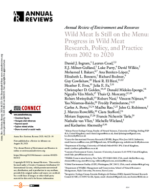
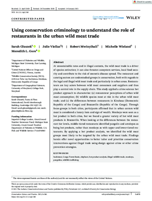
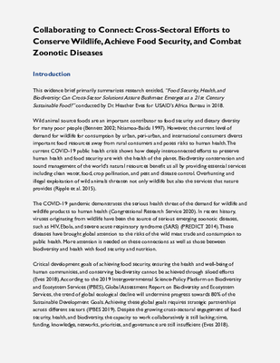
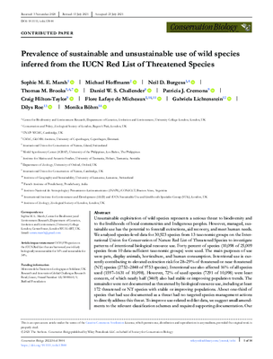
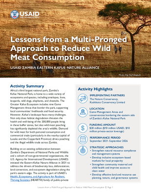
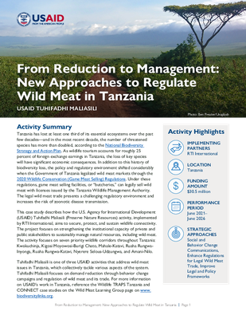
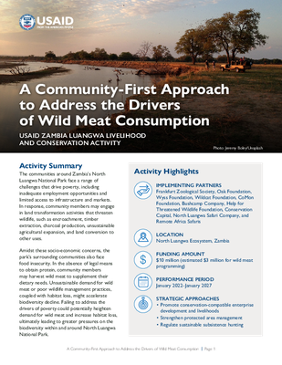

Wild Meat Collaborative Learning Group Evidence Collection
The searchable evidence collection below is a highly curated set of resources compiled by the Wild Meat Collaborative Learning Group based on the Theory of Change and Learning Agenda developed by the group. This collection includes published literature, grey literature, and products produced by the group.
Searching the Evidence Collection
Start searching the Evidence Collection by using the filters below (click to expand each filter)
Bushmeat hunting and consumption is a pervasive issue in African savannahs: insights from four protected areas in Malawi
Bushmeat, wet markets, and the risks of pandemics: Exploring the nexus through systematic review of scientific disclosures
Recognizing the Multiple Reasons for Bushmeat Consumption in Urban Areas: A Necessary Step Toward the Sustainable Use of Wildlife for Food in Central Africa


The Interplay between Cultural Practices, Food Insecurity, and Poverty in the Consumption of Wild Meat


The church, food culture, and ecotheology: An ongoing church effort in reducing bushmeat eating in Minahasa, Indonesia



Wild Meat Is Still on the Menu: Progress in Wild Meat Research, Policy, and Practice from 2002 to 2020

Using conservation criminology to understand the role of restaurants in the urban wild meat trade
Towards reduced meat consumption: A systematic literature review of intervention effectiveness, 2001–2019

Collaborating to Connect: Cross-Sectoral Efforts to Conserve Wildlife, Achieve Food Security, and Combat Zoonotic Diseases



Prevalence of sustainable and unsustainable use of wild species inferred from the IUCN Red List of Threatened Species

Lessons from a Multi-Pronged Approach to Reduce Wild Meat Consumption: USAID Zambia Eastern Kafue Nature Alliance

From Reduction to Management: New Approaches to Regulate Wild Meat in Tanzania - USAID Tuhifadhi Maliasili
